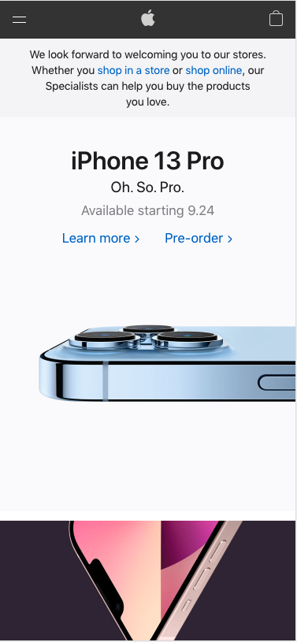

White Space and Clean Design
Apple Inc.
Apple.com Apple masterfully uses white space to center the viewer attention on the title ("iPhone 13 Pro") and the picture featuring the main highlight of this model (the incredibly powerful camera lenses) The design is minimal, the frame is clear from useless objects, and the attention is focalized on the object that they want you to buy. White space fills the canvas, and yet it is incredibly well-balanced with the rest of the composition.
Visual Hierarchy
Adidas
Adidas.comI like how Adidas is using visual hierarchy to draw the attention viewer on the main subject of the frame. The picture of the shoes is center, prominent, with color contrast that attracts the viewer's attention. Then, the second largest object is the text below the picture. It conveys the value proposition related to that picture. Third, you are drawn to the "Subscribe" button, which is the call-to-action. The value of each part is highlighted by the size, font, color, and prominence on the page.
Hick's Law
Medium
Medium.comMedium exemplifies very well Hick's Law, which states that "every additional choice increases the time required to take a decision." Medium has hundreds of thousands of articles to choose from. It would feel overwhelming for a user to get on the page and choose one. However, when you open the webpage, they give a selection of "Recommended for you."This way, the time to make a choice and find the right article is minimezed. I hardly ever have to manually search for an article there.